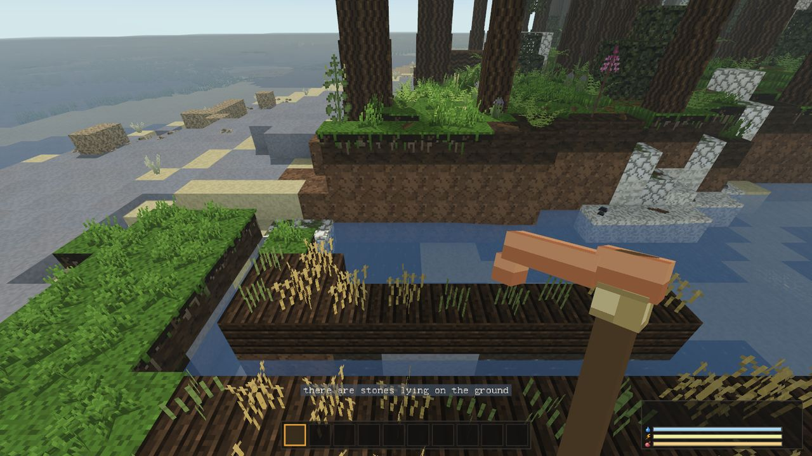

Farming
A field is the first food you make rather than find. The hunter eats better for one evening; the farmer eats every evening.
1. Seeds come from wild wheat
Grass does not drop seeds. Seeds come from wild wheat: clumps of grain in warm, dry, open country. Most often in the steppe, less often on meadows, now and then at a dry forest edge. It does not grow in the cold or the wet, so a player who starts in the north goes south for a first field. It looks like ripe wheat in a field; that silhouette means "grain" everywhere in the game. Wild wheat does not grow back once picked.
2. Make a hoe
| Hoe | Recipe |
|---|---|
| Hoe (flint) | 2 flint flakes + 1 worked stick + 3 fibre, by hand |
| Hoe (bone) | 2 bones + 1 worked stick + 3 fibre, by hand. The same hoe, for those who settle far from flint. |
| Copper hoe | copper hoe head (1 copper ingot cast in the mould at the kiln) + worked stick + sinew, by hand |
If you have knapped one knife, you have everything the flint hoe needs. The hoe is not counted as a digging tool: it breaks nothing and opens no rock. It wears out after about 120 tillings.
Right-click with the hoe does nothing? In version 1.5.2 a right-click with the hoe (and with a stake) never reached the server, so nothing was tilled. This is fixed in the next update.
3. Till the ground
Hold the hoe and right-click grass or earth. The block becomes farmland, and only farmland takes a crop. The cell above must be empty. Grass, dirt and the various soils (sandy soil, loam, chernozem, loess, rendzina and others) can all be tilled.
The hoe tells you two things when it turns the soil: whether water is close by, and what kind of earth this is, if it is not ordinary (rich earth on floodplains, marsh edges and river banks grows things one and a half times faster; poor earth on sand, tundra, mountains and dry inland is one and a half times slower). The same message comes at most once a minute, so tilling a whole field gives one line, not eighty.

4. Water
A field is watered if there is water within four blocks of the farmland, at the same level or one block lower. The four blocks count as a square, diagonals included, so a ditch down the middle of a field nine wide waters it to the edges. A ditch dug from a river counts. A frozen ditch does not.
A dry field grows two and a half times slower. Fill in the ditch and it slows at once.

5. Sow, wait, harvest
- Sow: place seeds on farmland like any block.
- Wait: two stages of 15 minutes each when watered and warm: green stalks, then golden ears.
- Harvest: break the ripe crop by hand. It gives grain and one seed. Unripe, it gives back the seed. The field resows itself; to make it bigger you go back to the wild wheat.
Warmth and frost
| Crop | Grows from | Killed by frost at |
|---|---|---|
| Wheat | 4° | −6° |
| Millet | 14° | 0° |
| Cotton | 16° | 0° |
Below its threshold a crop stops but does not lose progress; a cold night costs one night. The temperature is the one you would feel standing in that cell: season, height, hour, rain, a roof and a nearby fire all count. A frost-killed crop stays as withered stalks that give fibre and nothing else. A ripe crop is safe; its grain is already made.
Sow wheat in spring and reap before the autumn nights. Millet and cotton on a temperate meadow are summer crops only. A fire by the field keeps the air over it warm on a frosty night, and a roof over a bed takes away the cold of the open sky.
Seasons
A day lasts 30 minutes; a year is 40 days, ten for each season. A new world opens at the end of spring, summer comes on day 4, and the first winter on day 24, roughly twelve hours of play in. Winter adds about −10° everywhere, summer about +6°.
Ash, manure and tired soil
- A harvest taken from farmland without ash leaves it tired (it turns pale, like burnt straw), and the next crop on it takes one and a half times as long.
- Ash: right-click tilled ground with ash. The earth turns grey and the next crop grows a third faster; the ash is used up by that harvest. Ash comes from the hearth's ash slot, from a charcoal pit left open, and from burnt trees.
- Fallow: bare farmland with nothing sown rests in half an hour.
- Manure from kept animals, left on a furrow and picked up again, feeds it like ash.
Two fields in turn, one growing and one resting, crop as often as one fresh field.
From grain to bread
- Flour: 3 grain + 1 pebble → 2 flour, by hand. The pebble comes back. (At the mason's block: 3 grain → 3 flour.)
- Dough: 2 flour + a jug of water → dough. The jug comes back empty. River or pond water is fine; sea water is not.
- Bread: dough at any fire.
Bread fills 8, less than cooked meat (10) and more than almost anything else. It goes stale and mouldy in four days (eight in a cool cellar). Grain and flour never spoil, so the winter store is a barrel of grain, not a chest of bread.
Cotton and millet
Wild cotton is a low bush with white bolls in the savanna. Pick it by hand for cotton and cotton seeds. Cotton needs warm air (from 16°): a field of it grows in the savanna and hardly moves on a temperate meadow. Cloth woven from it is the only clothing that is cooler than none in the heat.
Millet grows faster than wheat (stages take 0.6 of the time) but wants warmth.
Stakes are not for crops
A stake (2 sticks + 1 flint flake → 2 stakes; the flake comes back) is a building piece, not a garden one. Drive it into the ground and weave 3 sticks onto it for a wattle panel, then daub it for a wall; stakes are also used for spike traps. Crops need nothing but farmland, water and warmth.